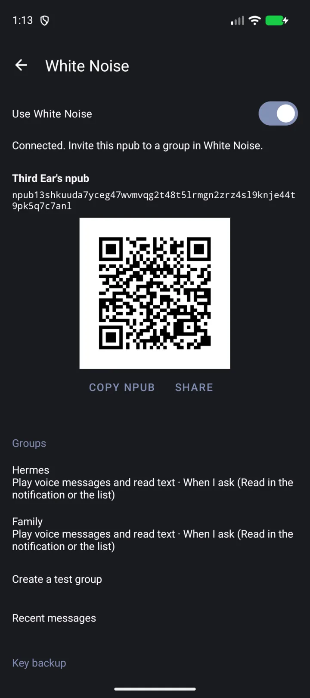
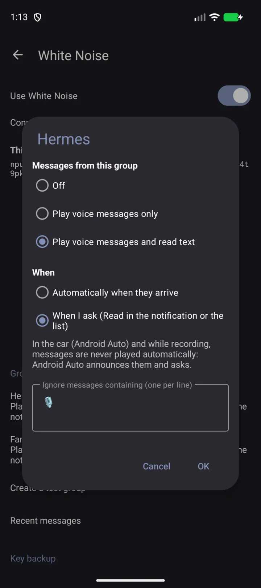

Das Diktiergerät, das weiß, wohin deine Worte gehören
Nimm mit dem Handy auf, mit einem Bluetooth-Headset, mit LE-Audio-Hörgeräten oder im Auto. Das Transkript entsteht auf dem Handy. Das Ergebnis geht dorthin, wo die Taste hinführt, auf die du getippt hast.
- Kostenlos
- Open Source (GPLv3)
- Kein Konto, keine Analyse
- Android 12+

Eine Taste für jedes Ziel
Die meisten Rekorder haben eine Aufnahmetaste. Third Ear hat die Tasten, die du selbst festlegst: ein Name und das, was danach passiert.
- nur die Aufnahme speichern
- das Transkript in die Zwischenablage kopieren
- die Datei oder den Text teilen
- Audio, Transkript oder beides an eine White-Noise-Gruppe senden
- an einen Webhook senden (n8n, Home Assistant, dein eigener Server)
Tippe auf eine Taste, und die Aufnahme startet. Während der Aufnahme wird jede Taste zu „Stopp → Name“ und sagt, was sie tun wird. So kannst du das Ziel im Moment des Stoppens noch ändern. Danach zeigt eine Benachrichtigung jeden Schritt (speichern, transkribieren, auf die Transkriptions-App warten, senden) und spricht ihn auf Wunsch auch aus, zum Beispiel „Gespeichert, wird transkribiert.“


Bluetooth-Mikrofone, die wirklich funktionieren
Android gibt ein Bluetooth-Mikrofon nur an Apps, die sich wie ein Telefonat verhalten. Third Ear übernimmt dieses Routing für dich. So kannst du mit Headsets, LE-Audio-Hörgeräten und der Freisprechanlage im Auto aufnehmen.
- Es wartet, bis LE Audio gestartet ist („Warte auf das Bluetooth-Mikrofon…“, meist 1,7 bis 3,5 Sekunden).
- Sobald das Mikrofon wirklich Ton liefert, sagt eine Stimme, dass du loslegen kannst.
- Die Quellentaste auf dem Aufnahmebildschirm zeigt, welches Mikrofon tatsächlich aufnimmt.
- Wenn das Bluetooth-Mikrofon nicht startet oder die Verbindung abbricht, wechselt Third Ear einmal zum Handy-Mikrofon, mit hörbarem Signal.
- Du kannst das Mikrofon mitten in der Aufnahme wechseln. Sie läuft in derselben Datei weiter.
Getestet auf einem Pixel mit LE-Audio-Hörgeräten.

Am besten mit Offline Speech to Text
Third Ear bringt keine eigene Spracherkennung mit. Es übergibt die fertige Datei an Offline Speech to Text (OSTT), eine kostenlose App, die direkt auf dem Gerät und ohne Internet transkribiert. Das läuft im Hintergrund, ein gesperrter Bildschirm stört nicht.
- Ist OSTT gerade beschäftigt (etwa weil die Tastatur diktiert), wartet Third Ear und versucht es etwa 10 Minuten lang erneut.
- Transkripte werden als .txt-Dateien neben der Aufnahme gespeichert, und du kannst sie kopieren.
Offline Speech to Text im Zapstore holen
Besprechungsnotizen und Diktat
Lege dir eine Aktion „Meeting notes“ an: aufnehmen, Transkript bekommen. Oder nimm „Transkript in die Zwischenablage“ und diktiere in jede beliebige App: aufnehmen, tippen, einfügen. Die Transkripte sind einfache Textdateien neben dem Audio, du kannst also darin suchen.
Sprachnachrichten in White Noise, und Antworten zurück
White Noise ist ein Ende-zu-Ende-verschlüsselter Messenger auf Basis von nostr (Marmot/MLS). Third Ear hat dort eine eigene Identität, angezeigt als npub mit QR-Code. Lade sie in eine Gruppe ein, nimm an, und eine Aktion sendet deine Sprachnachricht mit dem Transkript als Bildunterschrift, oder nur den Text.
Antworten kommen zurück. Pro Gruppe wählst du: aus, Sprachnachrichten abspielen, oder Sprache abspielen und Text per Sprachausgabe vorlesen. Das passiert automatisch oder auf Anfrage über „Vorlesen“ in der Benachrichtigung. Eine Ignorierliste (Standard 🎙️) überspringt Nachrichten, die du nicht hören willst. Die Liste der letzten Nachrichten hat Abspielen und Vorlesen. Deinen Schlüssel sicherst du mit Export und Import des nsec.
Mit einem KI-Agenten sprechen, freihändig
Packe Third Ear und einen Agenten wie den Hermes agent in eine Gruppe. Hermes ist ein KI-Agent, den du in White-Noise-Gruppen über den MDK-Connector erreichst. Du sprichst, der Agent bekommt das Transkript (oder das Audio), und seine Antwort wird dir vorgelesen oder abgespielt, mit Headset oder Hörgeräten und ohne Blick auf den Bildschirm. Das Echo deines Transkripts vom Agenten überspringt der Ignorier-Eintrag 🎙️.
Agenten hinter dem MDK-Connector müssen den npub von Third Ear zulassen (--allow-welcomer oder --allow-user).


Im Auto mit Android Auto
- Ein Raster deiner Aktionen auf dem Autobildschirm.
- Aufnahme mit dem Mikrofon des Autos und ein Bildschirm „Stopp → Aktion“.
- Eingehende White-Noise-Nachrichten erscheinen als Auto-Benachrichtigungen mit Antworten und Als gelesen markieren. Android Auto liest sie vor, wenn du darum bittest, nie von selbst.
Apps, die nicht aus einem Store stammen, brauchen in den Android-Auto-Entwickleroptionen „Unbekannte Quellen“.
Gebaut für lange Aufnahmen
- Nimmt bei ausgeschaltetem Bildschirm und gesperrtem Handy weiter auf, bis du stoppst.
- Absturzsicher: Wird die App beendet, wird das Aufgenommene beim nächsten Start wiederhergestellt und gespeichert. Höchstens die letzte Sekunde geht verloren.
- Ein Stille-Wächter warnt dich, wenn das Mikrofon digitale Stille liefert, etwa weil der Mikrofonschalter aus ist oder eine andere App es belegt.
- Formate: AAC (.m4a), Opus (.ogg) und MP3.
Überall griffbereit
Drei Schnelleinstellungs-Kacheln, jede an eine deiner Aktionen gebunden, und ein Widget für den Startbildschirm. Die Bildschirme von Third Ear gibt es auf Englisch, Slowakisch, Tschechisch, Deutsch und Spanisch.
Kostenlos, Open Source, privat
Third Ear ist freie Software unter der GPLv3. Es gibt kein Konto und keine Analyse. Die Transkription läuft auf deinem Handy.
Es ist ein Fork von Fossify Voice Recorder , entwickelt von Juraj Bednár.
Third Ear holen
Third Ear ist noch nicht veröffentlicht. Es kommt bald in den Zapstore. Voraussetzung ist Android 12 oder neuer.
Bald im Zapstore Quellcode auf GitHub
Installiere zuerst Offline Speech to Text, die App übernimmt das Transkribieren.